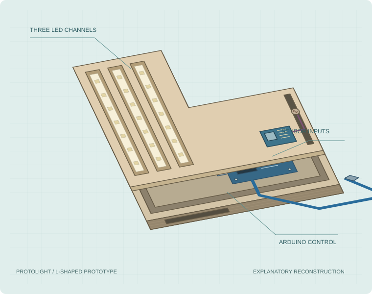
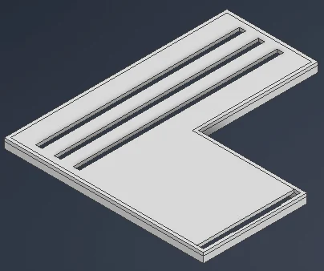
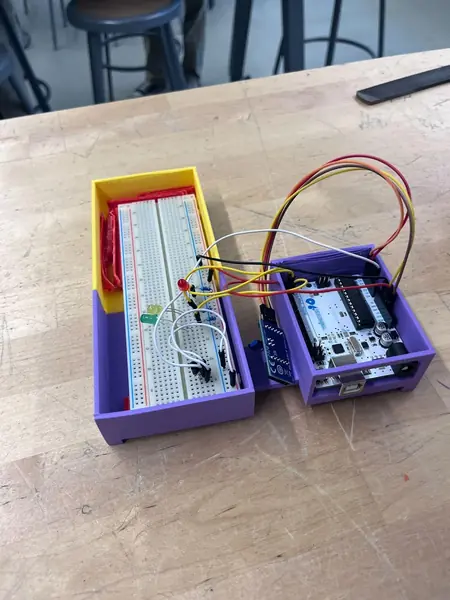
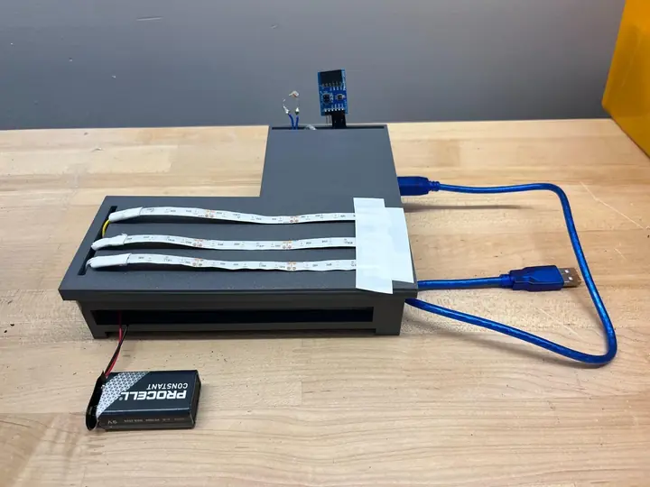

Electronics + fabrication
Protolight
A sensor-driven lighting prototype with a printed L-shaped enclosure.
Abdallah Abdulazeez
Mechanical Engineering Technology
New Jersey Institute of Technology
I’m Abdallah. I work across CAD, fabrication, and electronics to turn ideas into things I can build, test, and improve.
Explore my work Scroll to explore
Selected work
Electronics + fabrication
A sensor-driven lighting prototype with a printed L-shaped enclosure.
CAD + fabrication
A clean exterior with the wiring, power, and light built inside.
Inside the actual build
From sensor readings to a finished build.
Six chapters. Follow the process.



The photoresistor measures ambient light. A temperature and humidity sensor adds environmental data for fog-mode decisions, while temperature also provides an overheating safeguard.
The Arduino connects the sensor readings to three LED channels. The prototype adjusts brightness and switches lighting modes as the inputs change.
My notebook role was physical manager: coordinating the CAD, programming, and physical build with our four-person team.
Explore the circuit and buildThe physical layout has to support both the circuit and the light. The L-shaped design groups the electronics beside three long LED channels, while the cover gives each strip a defined place.
On screen: an actual CAD export from our engineering notebook.
The early assembly brought the Arduino, breadboard, sensors, and LED wiring into one physical system. It let us work through the gap between a circuit idea and a build we could test.
On screen: our actual early circuit and printed enclosure.
The notebook documents several case revisions. Wire clearance, component access, and cover tolerances all had to work together, so we adjusted the printed parts as the physical build developed.
On screen: an earlier prototype, before the final L-shaped cover.
The final L-shaped cover holds three LED strips and leaves the environmental sensors exposed. In testing, the system adjusted brightness with ambient light and activated fog-mode lighting under simulated high-moisture conditions.
Documented in May 2026. The next steps identified in our notebook were better calibration, enclosure refinement, and more realistic weather testing. This remains a concept prototype, not a road-certified headlight.
See the real CAD and photosThe next thing to build